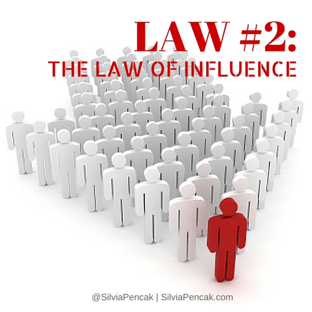
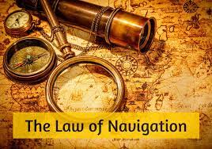

<!DOCTYPE html>
<html Lang="en">
<head>
 <meta charset="UTF-8">
    <meta name="viewport" content="width=device-width, initial-scale=1.0">
    <meta http-equiv="X-UA-Compatible" content="ie=edge">
    <title>HTML 5 Boilerplate</title>
    <link rel="stylesheet" href="style.css">
  </head>
  <body>
	<script src="index.js">
</script>
  </body>
</html>
<hr />
 <br />
<p> <b> <i> John C. Maxwell </i> </b>, is an internationally recognized leadership expert, speaker, and author who has sold over 16 million books. His organizations have trained more than 2 million leaders worldwide. Maxwell has written many successful books on leadership such as;
        <ul>
          <li><a href="https://www.amazon.com/dp/B06XFRGKZD">Developing the Leader within you.</a></li>
          <li><a href="https://www.amazon.com/dp/B004QZ9P7O"> The 5 Levels of leadership. </a></li>
          <li><a href="https://www.amazon.com/dp/B00199RHE8"> How Successful people think.</a> </li>
        </ul>

     <hr />Various chapters within summary;
          <ol>
            <li><a href='#jim'> Chapter 1-"The Law of the Lid"</a></li>
            <li><a href='#john'> Chapter 2-"The Law of Infuluence"</a></li>
            <li><a href='#bob'>Chapter 3-"The Law of Process"</a></li>
            <li><a href='#mark'> Chapter 4-"The Law of Navigation"</a></li>
          </ol>
         <hr />
          <br />
          The 1<sup id='jim'>st</sup>law, <b> The Law of the Lid </b> talks on your level of effectiveness and accomplishments is determined by your level of leadership. In fact, leadership has a multiplier effect on success – by raising your leadership ability, you can increase your overall effectiveness many times without increasing your success dedication. <br />
        <hr />
          <br />
         The 2<sup id='john'>nd</sup> law, <strong> The Law of Influence </strong> shows readers that contrary to myths, leadership is <em> not </em> the same as management, entreprenueurship, knowledge, pioneership, or position in fact the proof is in the pudding a leader is defined by his followers. As a leaders followers wears his teachings representing him as does a athlete to a country. <hr />
          <br />
        The 3<sup id='bob'>rd</sup> law,<strong> <abbr title="The Law of">TLO</abbr> Process </Strong> preaches that; <q> <cite> <ins> Leadership develops daily,</ins> <s> not in a day! </s> </cite></q> Which states that leadership is somewhat similar to investing, as it compounds over time and its fortunes don't come overnight. A leaders' ability to learn, develop, and improve on their skills is what sets them aside from their follower.  <hr />
          <br />
          The 4<sup id='mark'>th</sup> law, <strong> <abbr title="The Law of">TLO</abbr> Navigation, </strong> says that; <q> <strong> Anyone can steer the ship, but it takes a leader to chart the course.</strong> </q> Good leaders are navigators and set the direction for their team. They have a clear vision for their destination, see the entire trip in their minds, understand who and what they need to be a successful in their endeavour, and recognize the obstacles in advance. <hr />

          Feel Free to Inquire on this article done in reference to author, John C. Maxwells' "21 Irrefutable Laws of Leadership." by email; <a href="mailto: jpoeticsftw@gmail.com">Email Me</a>
</p>

</body>
</html>
